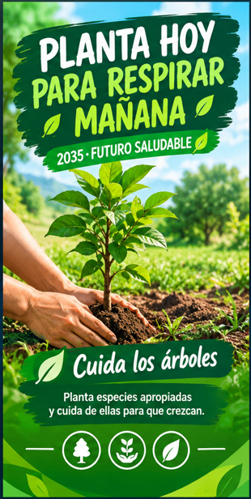
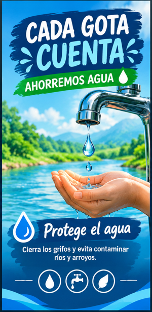
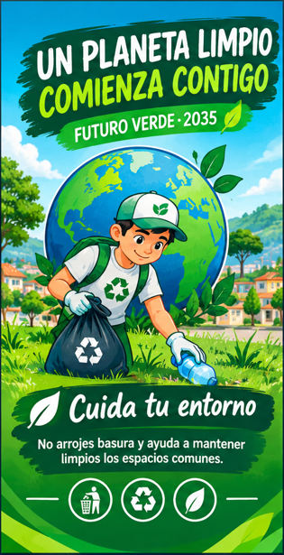

Problema
Basura, contaminación del agua, quema de residuos y pérdida de árboles.
Cuidemos hoy nuestra comunidad para vivir en un mundo mejor en 2035.
Un proyecto de Ciencias Naturales y Medio Ambiente para promover acciones responsables y construir una comunidad limpia, organizada y respetuosa con la naturaleza.
El medio ambiente nos proporciona agua, aire, alimentos y recursos necesarios para vivir. La contaminación, la acumulación de basura, la tala de árboles y el desperdicio de agua dañan nuestro entorno. Podemos actuar desde ahora para cambiar esta realidad.
Basura, contaminación del agua, quema de residuos y pérdida de árboles.
Acciones cotidianas para reducir residuos y proteger los recursos naturales.
Estudiantes, docentes, familias, vecinos y autoridades trabajando unidos.
Empezar hoy y mantener los hábitos para las futuras generaciones.
Debemos identificar los problemas que afectan realmente a nuestra comunidad y comprender cómo perjudican a las personas, los animales, las plantas y los espacios naturales.
Acumulación de residuos en calles, plazas y espacios públicos.
Contaminación de ríos y arroyos y uso inadecuado del agua.
La quema de residuos contamina el aire y afecta la salud.
La tala y los incendios dañan los bosques y los hábitats.
¿Qué podemos cambiar desde hoy para que nuestra comunidad sea más limpia, verde y saludable?
Cada desafío ambiental es una oportunidad para actuar con responsabilidad y proteger nuestro hogar común.
Organizar jornadas de limpieza y depositar los residuos en lugares adecuados.
Separar papel, cartón, plástico, vidrio y residuos orgánicos según las posibilidades.
Cerrar grifos, reparar fugas y evitar contaminar ríos y arroyos.
Plantar y cuidar árboles nativos y proteger los espacios naturales.
Prevenir quemas irresponsables y promover el cuidado de los bosques.
Acciones propuestas para cuidar la naturaleza desde nuestros hogares, escuelas y espacios comunitarios.
Recoger basura de calles, plazas, patios escolares y espacios públicos.
Conocer más 02 REFORESTACIÓNPlantar especies nativas en lugares apropiados y cuidarlas para que crezcan.
Conocer más 03 REUTILIZACIÓNSeparar materiales y reutilizar objetos para reducir la cantidad de basura.
Conocer más 04 AGUAAhorrar agua y evitar arrojar basura, aceites o contaminantes a las fuentes de agua.
Conocer más 05 APRENDIZAJERealizar charlas, exposiciones, carteles y concursos para aprender a proteger la naturaleza.
Conocer más 06 BIODIVERSIDADRespetar a los animales silvestres, cuidar sus hábitats y prevenir incendios forestales.
Conocer más 07 ENERGÍAApagar luces innecesarias y aprovechar la iluminación natural.
Conocer másUn lugar limpio, verde, ordenado y saludable, construido con el compromiso de todas las personas.
Espacios públicos libres de basura y residuos depositados correctamente.
Árboles y jardines cuidados, con áreas verdes para disfrutar y proteger.
Ríos y arroyos cuidados para conservar la vida de animales y plantas.
Familias, estudiantes y autoridades que participan y mantienen hábitos responsables.
El cronograma es una propuesta y podrá ajustarse a los recursos y necesidades de la comunidad.
Reconocer los principales problemas ambientales y organizar grupos de trabajo.
Realizar actividades de limpieza, reciclaje y educación ambiental.
Fortalecer la reforestación y la protección de las fuentes de agua.
Revisar los avances y aumentar la participación de los vecinos.
Revisar los resultados y mantener las prácticas que ayuden a cuidar la comunidad.
Esta sección puede utilizarse para presentar fotografías de las actividades, videos, exposiciones y avances del proyecto.
Las fotografías y los videos pueden documentar las campañas de limpieza, la plantación de árboles, el reciclaje y las actividades de educación ambiental.
Súmate al compromisoIdeas de mensajes que pueden convertirse en carteles para la escuela, el hogar y los espacios comunitarios.

No arrojes basura y ayuda a mantener limpios los espacios comunes.

Cierra los grifos y evita contaminar ríos y arroyos.

Planta especies apropiadas y cuida de ellas para que crezcan.
Hábitos sencillos que podemos aplicar a diario para reducir nuestro impacto ambiental.
Separa los residuos y da nuevos usos a los materiales cuando sea posible.
Cierra los grifos cuando no los utilices y comunica las fugas para repararlas.
Apaga las luces que no necesites y aprovecha la iluminación natural.
No quemes basura y ayuda a difundir la prevención de incendios forestales.
La participación de toda la comunidad es necesaria para mantener las acciones ambientales en el tiempo.
Aprender, compartir información y participar en las actividades.
Orientar las actividades y promover la educación ambiental.
Practicar hábitos responsables y colaborar en las campañas.
Apoyar la organización y facilitar recursos cuando sea posible.
Registraremos los avances mediante observaciones periódicas, fotografías, listas de actividades y reuniones comunitarias.
Registrar las actividades realizadas y observar si los espacios se mantienen más limpios.
Observar si se separan los residuos y se reutilizan materiales.
Registrar los árboles plantados y verificar cuáles sobreviven y crecen.
Revisar la participación vecinal y los hábitos de ahorro de agua y energía.
Una comunidad limpia y saludable se construye con pequeñas acciones constantes y con la participación de todos.